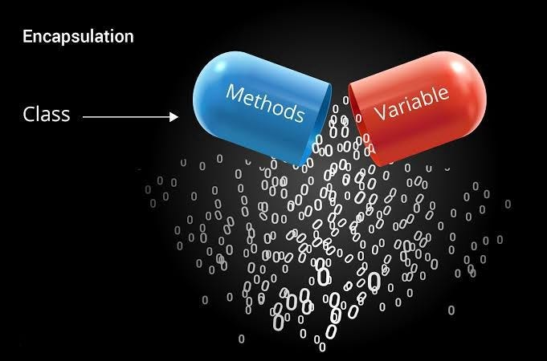
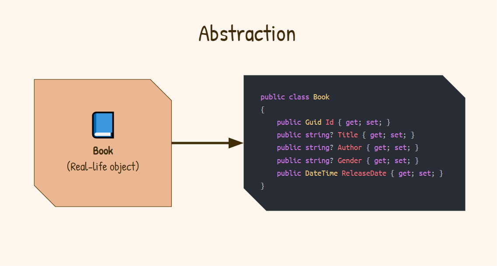
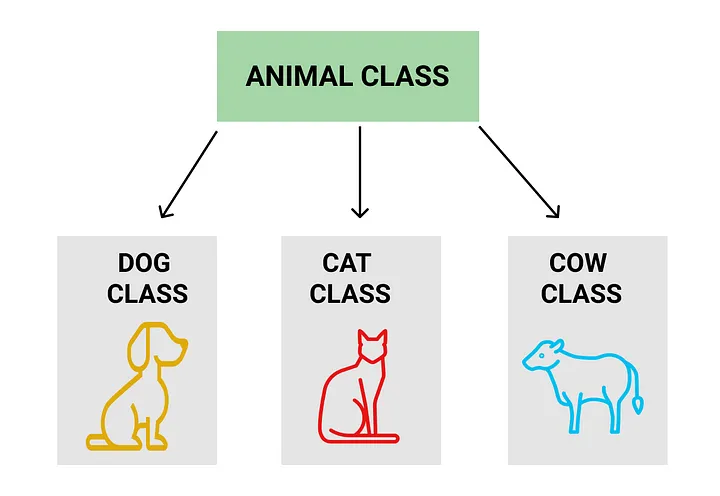
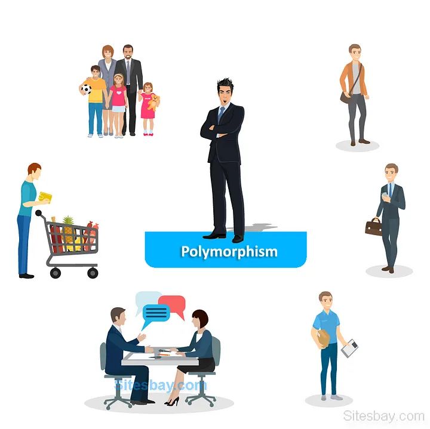

Introduction
Object-Oriented Programming (OOP) is a paradigm that structures programs around objects, which represent real-world entities. It simplifies software development by making it modular, flexible, and scalable. OOP relies on four core concepts: Encapsulation, Abstraction, Inheritance, and Polymorphism. Let's explore each concept in detail.
1. Encapsulation
Encapsulation is the bundling of data (attributes) and methods (functions) that operate on the data into a single unit known as a class. It restricts direct access to some of the object's components, which is key for ensuring data integrity.
Why Encapsulation?
- Data Hiding: By restricting access to variables using access modifiers like
private, you prevent unwanted changes to critical data. - Modularity: Encapsulation allows each class to act independently, making code more maintainable and reusable.
Example in C#:
// Encapsulation Example
public class BankAccount {
private double balance;
public void Deposit(double amount) {
if(amount > 0) {
balance += amount;
}
}
public double GetBalance() {
return balance;
}
}
In this example, the balance variable is private, meaning it cannot be directly accessed or modified from outside the class. Instead, controlled access is provided through methods like Deposit and GetBalance.
2. Abstraction
Abstraction is the process of hiding the complex implementation details of a system and showing only the essential features. It allows developers to work with higher-level functionalities without worrying about the underlying logic.
Why Abstraction?
- Simplicity: By exposing only necessary methods, abstraction reduces the complexity for users and developers.
- Security: Hiding sensitive logic ensures that it remains protected from unintended access or manipulation.
Example in C#:
// Abstraction Example
public abstract class Animal {
public abstract void MakeSound(); // Abstract method
}
public class Dog : Animal {
public override void MakeSound() {
Console.WriteLine("Bark");
}
}
In this example, the abstract class Animal defines an abstract method MakeSound. The specific implementation is left to the subclasses (e.g., Dog), which provide their version of MakeSound.
3. Inheritance
Inheritance allows a class to inherit properties and behavior from another class, promoting code reusability. The class that inherits is called the subclass or child class, and the class being inherited from is the superclass or parent class.
Why Inheritance?
- Code Reusability: Inheritance allows you to create new classes based on existing ones, reducing redundancy.
- Extensibility: You can easily extend the functionality of a parent class by adding new features to the child class.
Example in C#:
// Inheritance Example
public class Animal {
public void Eat() {
Console.WriteLine("This animal is eating.");
}
}
public class Dog : Animal {
public void Bark() {
Console.WriteLine("The dog barks.");
}
}
In this example, the Dog class inherits the Eat method from the Animal class. Additionally, the Dog class defines its own method Bark.
4. Polymorphism
Polymorphism allows objects to be treated as instances of their parent class, enabling a single function to behave differently based on the object it is acting upon. This is achieved through method overriding and method overloading.
Why Polymorphism?
- Flexibility: You can write more flexible and scalable code that can handle different types of objects in a unified way.
- Maintainability: Polymorphism allows you to change the behavior of methods in derived classes without affecting the parent class.
Example in C# (Method Overriding):
// Polymorphism Example
public class Animal {
public virtual void MakeSound() {
Console.WriteLine("This animal makes a sound.");
}
}
public class Dog : Animal {
public override void MakeSound() {
Console.WriteLine("The dog barks.");
}
}
public class Cat : Animal {
public override void MakeSound() {
Console.WriteLine("The cat meows.");
}
}
In this example, both Dog and Cat classes override the MakeSound method from the Animal class. This allows for different behaviors based on the specific type of animal.
OOP in Data Science
OOP principles are also essential in data science, especially when working with machine learning models. For instance:
- Encapsulation: Models encapsulate the training data and the logic for prediction.
- Abstraction: Libraries like
scikit-learnabstract complex algorithms, allowing users to apply models with simple method calls. - Inheritance: New models can inherit from existing classes, allowing for easy customization.
- Polymorphism: Different models can be treated uniformly through a common interface.
Example in Python:
from sklearn.ensemble import RandomForestClassifier
# Create an instance of the model
model = RandomForestClassifier()
# Fit the model to the training data
model.fit(X_train, y_train)
# Make predictions
predictions = model.predict(X_test)
In this example, RandomForestClassifier encapsulates the logic for training and prediction, allowing you to use its methods without needing to know the underlying details.
Conclusion
The four pillars of Object-Oriented Programming—Encapsulation, Abstraction, Inheritance, and Polymorphism—are fundamental concepts that enhance code organization, reusability, and maintainability. Understanding these principles is essential for developing efficient software and applying OOP in various domains, including data science and machine learning. By mastering these concepts, developers can build more robust and flexible applications that can adapt to changing requirements.